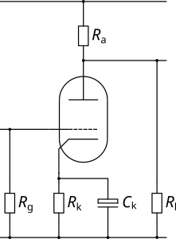

| Circuit Parameter | Operating Point | ||
|---|---|---|---|
| Field 1 | Value 1 | ||
| Field 2 | Value 2 | ||
| Field 3 | Value 3 | ||
| Field 4 | Value 4 | ||
| Field 5 | Value 5 | ||
| Field 6 | Value 6 | ||
| Field 7 | Value 7 | ||
| Field 8 | Value 8 | ||
The Triode Common Cathode Amplifier is the workhorse of an valve amplifier and is comparable to its solid state cousins, whether based on FETs or BJTs. As the control grid needs to be biased negative with regard to the cathode, in small signal circuits this is universally achieved by using a cathode resistor (output tubes may use either cathode bias or fixed bias). Without attempting to provide a full analysis of the circuit (this has been done many times elsewhere), the basic principle is that the quiescent current (i.e. the current at the operating point) flowing from anode to cathode develops a voltage across the cathode resistor which means that the cathode sits at a positive voltage relative to ground. With the control grid referenced to ground this means that, at the operating point, the grid is negative with respect to the cathode.
One of the features of the cathode bias is that it creates a degree of local negative feedback - this is helpful as it makes the circuit very tolerant to variations in component values. Given that vintage components tend to have wide tolerances and age badly, this is a distinct advantage. However, another effect of local negative feedback is to reduce gain. Fortunately, this is easily countered (if gain is what you need) by bypassing the cathode resistor with a suitably large capacitor which ensures that the cathode AC impedance is essentially zero.